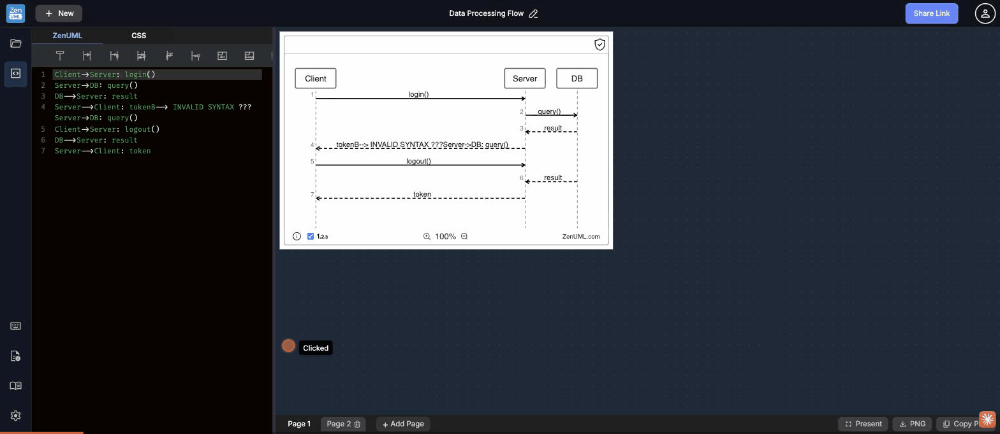

Test scenario: Multi-Page Flow — Add Page, tab switching, rename, delete · ZenUML Web Sequence · 2026-05-09
Clicking "+ Add Page" rapidly (or at a slightly offset position after the first page is added) triggers the delete confirmation dialog for the newly created page instead of adding another page. The trash icon on Page 2's tab sits directly adjacent to the "+ Add Page" button — a Fitts's Law violation where a destructive action is placed next to a creation action.
The 🗑 icon is always visible and its right edge is <8px from the "+ Add Page" left edge.

The trash icon (🗑) is always displayed on every deletable page tab. Its position directly adjacent to the "+ Add Page" button caused an accidental delete confirmation to fire during normal use. A destructive action sits next to a creation action with no safe gap.
Pages can only be named "Page 1", "Page 2", etc. Double-clicking the tab does not trigger inline rename. There is no right-click context menu, no rename icon, and no other affordance. Users building multi-diagram projects have no way to label their pages meaningfully.
Switching to a new empty page shows "Click to add your first participant" in the preview panel, but the code editor is a completely blank black area. The guidance appears in the wrong place — users need it in the editor where they'll type, not in the read-only preview.
// Start typing — e.g.\nA->B: hello(). The preview empty state can remain as a secondary cue, but the primary affordance must be in the editable area.The delete dialog says "The data on this page will be lost forever." There is no undo option and no way to recover the deleted page. For users who accidentally click delete (which happens easily due to GAP-03-001), their work is permanently gone.
Page tabs cannot be reordered by drag-and-drop. Users who add pages in the wrong order must delete and recreate them. No drag handles are shown, and no visual cue suggests tabs are moveable.